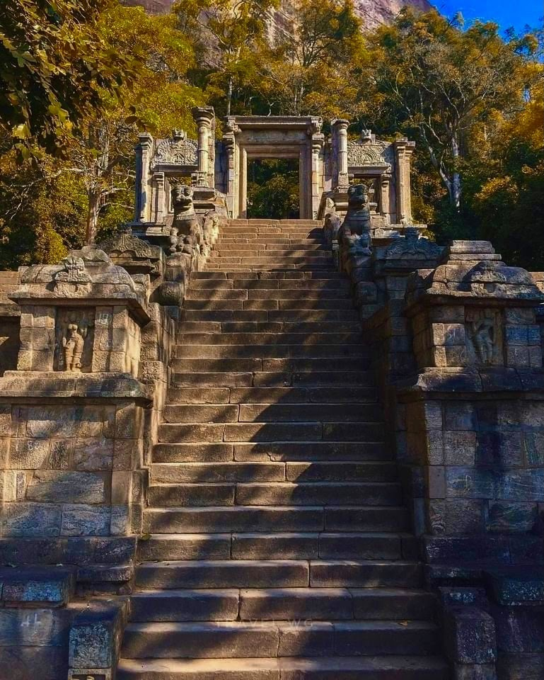
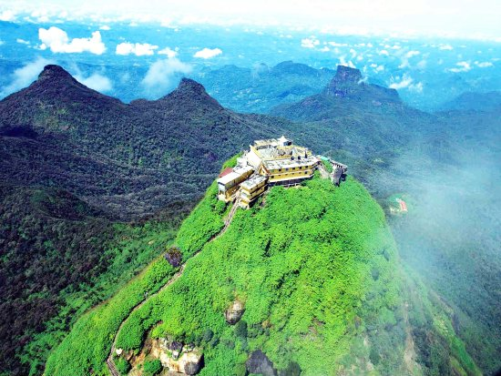

1. Ruwanwelisaya Maha Stupa
Ruwanwelisaya, situated in Anuradhapura, Sri Lanka, is a significant stupa with rich historical and religious importance. Built around 2nd century B.C. by King Dutugemunu, it enshrines Lord Buddha's relics, attracting Buddhist pilgrims worldwide. This iconic landmark stands tall at approximately 300 feet, boasting a striking architectural design. Its white dome gleams under the blue skies, captivating visitors. Lavish carvings, moonstones, and guard stones adorn the stupa's circumference, showcasing ancient Sri Lankan craftsmanship. Beyond its religious value, Ruwanwelisaya symbolizes unity and national pride for Sri Lankans. Numerous renovations highlight the enduring devotion to preserve this cultural gem. Visiting Ruwanwelisaya offers a profound spiritual experience and an opportunity to delve into Sri Lanka's illustrious past. Pilgrims and tourists are inspired by its tranquility and historical charm, leaving with a deep appreciation for the island's remarkable cultural and religious heritage.

2. Yapahuwa Kingdom

Yapahuwa, nestled in Sri Lanka's North Western Province, is a historic treasure steeped in cultural and architectural heritage. Briefly serving as the island's capital in the 13th century, it perches on a massive rock outcrop, once a strategic fortress and revered religious center. The rock fortress at Yapahuwa showcases ingenious ancient engineering. Remnants of a palace, sacred temple, and other structures dot the complex. Scaling the steep ascent rewards visitors with awe-inspiring panoramas of the lush landscape. The Yapahuwa Rock Temple, crowning the summit, houses ancient sculptures and paintings. The majestic staircase, graced by lion statues, adds to the site's splendor. A remarkable rock-carved Buddha statue epitomizes the era's artistic finesse. Despite its short-lived capital status, Yapahuwa's historical significance lives on. It stands today as a testament to the island's past, alluring history enthusiasts and religious pilgrims alike. Exploring Yapahuwa unveils Sri Lanka's remarkable legacy while basking in the surrounding natural beauty, creating a memorable journey through time.
3. Aluvihara, Matale
Aluvihara, situated in Matale, Sri Lanka, is an ancient Buddhist monastery of great historical and religious significance. Notably, it marks the site where the sacred scriptures of Theravada Buddhism, the Pali Canon, were first penned down in the 1st century BCE. The monastery's serene setting amidst lush greenery and rocky landscapes adds to its spiritual allure and historical charm. Legend tells of Buddhist monks seeking refuge in Aluvihara during King Valagamba's reign when Buddhism faced persecution. It was at this tranquil location that they diligently recorded the Buddhist teachings, ensuring their preservation for future generations. Aluvihara thus became a crucial center for safeguarding the authentic teachings of Buddhism in Sri Lanka. The monastery complex boasts various structures, including shrines, stupas, and meditation halls, showcasing architectural styles evolved over centuries. The Aluvihara Cave Temple, carved into a massive rock formation, stands as the primary attraction. Its interior walls showcase intricate murals, offering glimpses into Buddhist folklore and historical events, a testament to the country's artistic heritage. Today, Aluvihara remains a revered pilgrimage site for Buddhists and a cherished destination for history enthusiasts. Visitors can delve into Sri Lanka's Buddhist heritage's origins while finding tranquility and contemplation in the serene surroundings. Whether for spiritual seekers or cultural explorers, a visit to Aluvihara promises an enriching experience.

4. Adam's Peak

Adam's Peak, or Sri Pada, stands tall in Sri Lanka's central highlands, holding profound spiritual and cultural significance. Its unique conical shape and a footprint-shaped impression near the summit have inspired religious and mythical beliefs over the centuries. For Buddhists, the footprint belongs to Lord Buddha, while Hindus associate it with Lord Shiva. Christians and Muslims also revere the site, believing it to be Adam's or St. Thomas's footprint. This diversity makes Adam's Peak a gathering place for pilgrims from various faiths. The pilgrimage to this sacred peak is a cherished tradition for devotees and adventurers alike. Ascending at night allows pilgrims to witness a breathtaking sunrise from the summit. The journey involves navigating steps and marked paths, though it demands physical effort. Along the way, rest stops, tea stalls, and religious shrines offer moments of respite and contemplation. Reaching the summit is a profoundly spiritual experience. Pilgrims offer prayers and make offerings at the sacred footprint. As the sun rises, the stunning panoramas instill a sense of awe and serenity, creating an unforgettable blend of natural beauty, cultural diversity, and spiritual devotion at Adam's Peak.
5. The Temple of the Tooth Relic
The Temple of the Tooth Relic, or Sri Dalada Maligawa, stands as an iconic religious site in Kandy, Sri Lanka. It holds an essential role in the country's cultural and religious heritage, housing a sacred relic of Buddhism - a tooth believed to be Lord Buddha's. This revered tooth is a symbol of protection and power, shaping Sri Lanka's governance throughout history. The temple's traditional Sri Lankan architecture boasts exquisite woodwork, delicate carvings, and stunning artwork. The golden-roofed shrine, safeguarding the sacred tooth relic, attracts both pilgrims and tourists. While access to the relic chamber is limited, visitors can explore and appreciate the temple's cultural and historical significance in the outer precincts. The Temple of the Tooth Relic hosts the grand Esala Perahera festival annually, a vibrant procession with majestic tuskers, drummers, dancers, and traditional performers paying homage to the sacred relic. This spectacle draws crowds from across the globe, enhancing the temple's allure and cultural importance. For Buddhists, the temple is a profound spiritual destination, while others find it an opportunity to immerse themselves in Sri Lanka's rich cultural heritage. With historical significance, architectural splendor, and spiritual ambiance, the Temple of the Tooth Relic is an essential place to experience the essence of Sri Lanka's diverse cultural tapestry.